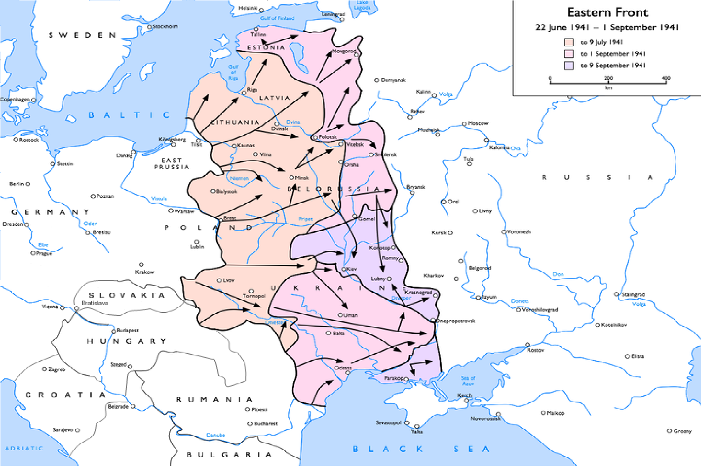

▎Первое Смоленское сражение (10 июля — 10 сентября 1941 года)
1. Предыстория:
- В начале июля 1941 года немецкие войска начали операцию "Барбаросса", стремясь захватить Москву. Смоленск находился на пути к столице и играл стратегическую роль.
2. Силы сторон:
- Советские войска: Западный фронт под командованием генерала Д. Г. Павлова.
- Немецкие войска: Группа армий "Центр" под командованием генерала Ф. фон Бока.
3. Ход сражения:
- Немецкие войска начали наступление на Смоленск, используя тактику быстрого маневра и окружения.
- Советские силы пытались организовать оборону, но были вынуждены отступить под давлением противника.
4. Итоги:
- Смоленск был захвачен немцами 10 сентября 1941 года.
- Несмотря на потерю города, советские войска выиграли время для перегруппировки и подготовки к дальнейшей обороне.
▎Второе Смоленское сражение (6-10 октября 1941 года)
1. Предыстория:
- После захвата Смоленска немецкие войска продолжили наступление на Москву, но советское командование начало контратаку.
2. Ход сражения:
- Советские войска провели контрнаступление, стремясь вернуть утраченные позиции.
- Бои проходили в условиях тяжелых потерь с обеих сторон.
3. Итоги:
- Второе Смоленское сражение не привело к значительным изменениям на фронте, но укрепило моральный дух советских войск.
- Оно также стало частью более широкой стратегии по защите Москвы и замедлению немецкого наступления.
|
 |